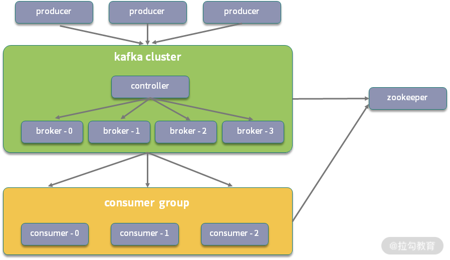
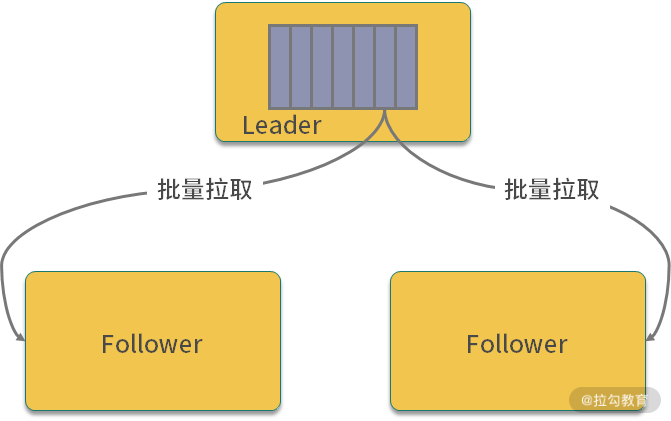

- 00 开篇词：搭建分布式知识体系，挑战高薪 Offer.md.html
- 01 如何证明分布式系统的 CAP 理论？.md.html
- 02 不同数据一致性模型有哪些应用？.md.html
- 03 如何透彻理解 Paxos 算法？.md.html
- 04 ZooKeeper 如何保证数据一致性？.md.html
- 05 共识问题：区块链如何确认记账权？.md.html
- 06 如何准备一线互联网公司面试？.md.html
- 07 分布式事务有哪些解决方案？.md.html
- 08 对比两阶段提交，三阶段协议有哪些改进？.md.html
- 09 MySQL 数据库如何实现 XA 规范？.md.html
- 10 如何在业务中体现 TCC 事务模型？.md.html
- 11 分布式锁有哪些应用场景和实现？.md.html
- 12 如何使用 Redis 快速实现分布式锁？.md.html
- 13 分布式事务考点梳理 + 高频面试题.md.html
- 14 如何理解 RPC 远程服务调用？.md.html
- 15 为什么微服务需要 API 网关？.md.html
- 16 如何实现服务注册与发现？.md.html
- 17 如何实现分布式调用跟踪？.md.html
- 18 分布式下如何实现配置管理？.md.html
- 19 容器化升级对服务有哪些影响？.md.html
- 20 ServiceMesh：服务网格有哪些应用？.md.html
- 21 Dubbo vs Spring Cloud：两大技术栈如何选型？.md.html
- 22 分布式服务考点梳理 + 高频面试题.md.html
- 23 读写分离如何在业务中落地？.md.html
- 24 为什么需要分库分表，如何实现？.md.html
- 25 存储拆分后，如何解决唯一主键问题？.md.html
- 26 分库分表以后，如何实现扩容？.md.html
- 27 NoSQL 数据库有哪些典型应用？.md.html
- 28 ElasticSearch 是如何建立索引的？.md.html
- 29 分布式存储考点梳理 + 高频面试题.md.html
- 30 消息队列有哪些应用场景？.md.html
- 31 集群消费和广播消费有什么区别？.md.html
- 32 业务上需要顺序消费，怎么保证时序性？.md.html
- 33 消息幂等：如何保证消息不被重复消费？.md.html
- 34 高可用：如何实现消息队列的 HA？.md.html
- 35 消息队列选型：Kafka 如何实现高性能？.md.html
- 36 消息队列选型：RocketMQ 适用哪些场景？.md.html
- 37 消息队列考点梳理 + 高频面试题.md.html
- 38 不止业务缓存，分布式系统中还有哪些缓存？.md.html
- 39 如何避免缓存穿透、缓存击穿、缓存雪崩？.md.html
- 40 经典问题：先更新数据库，还是先更新缓存？.md.html
- 41 失效策略：缓存过期都有哪些策略？.md.html
- 42 负载均衡：一致性哈希解决了哪些问题？.md.html
- 43 缓存高可用：缓存如何保证高可用？.md.html
- 44 分布式缓存考点梳理 + 高频面试题.md.html
- 45 从双十一看高可用的保障方式.md.html
- 46 高并发场景下如何实现系统限流？.md.html
- 47 降级和熔断：如何增强服务稳定性？.md.html
- 48 如何选择适合业务的负载均衡策略？.md.html
- 49 线上服务有哪些稳定性指标？.md.html
- 50 分布式下有哪些好用的监控组件？.md.html
- 51 分布式下如何实现统一日志系统？.md.html
- 52 分布式路漫漫，厚积薄发才是王道.md.html
34 高可用：如何实现消息队列的 HA？
管理学上有一个木桶理论，一只水桶能装多少水取决于它最短的那块木板，这个理论推广到分布式系统的可用性上，就是系统整体的可用性取决于系统中最容易出现故障，或者性能最低的组件。系统中的各个组件都要进行高可用设计，防止单点故障，消息队列也不例外，这一课时一起来看一下消息中间件的高可用设计。
消息队列高可用手段
一般来说，分布式系统的高可用依赖副本技术，副本的引入，使得分布式系统可以更好地进行扩展，当出现某个节点宕机时，由于副本的存在，也能够快速地进行替换，提升系统整体可靠性，防止数据丢失。
消息队列如何实现高可用的问题，如果出现在面试中，一般是作为一个相对开放的话题，你可以根据自己对分布式系统的了解，围绕副本、集群、一致性等和面试官展开讨论。消息队列在系统中承担了数据存储和数据传输的两种功能，所以消息队列的高可用设计，也比数据库、文件索引等持久性存储要复杂。
下面的内容，我以 Apache Kafka 为例，简单介绍一下消息队列的高可用设计。
Kafka 的副本机制
Kafka 的高可用实现主要依赖副本机制，我把 Kakfa 的高可用，拆分成几个小问题来讲解，一来是为了更好地理解，二来很多细节问题也可能出现在面试中，方便你更好地掌握。
Broker 和 Partition 的关系
在分析副本机制之前，先来看一下 Broker 和 Partition 之间的关系。Broker 在英文中是代理、经纪人的意思，对应到 Kafka 集群中，是一个 Kafka 服务器节点，Kafka 集群由多个 Broker 组成，也就是对应多个 Kafka 节点。

Kafka 是典型的发布订阅模式，存在 Topic 的概念，一个 Broker 可以容纳多个 Topic，也就是一台服务器可以传输多个 Topic 数据。
不过 Topic 是一个逻辑概念，和物理上如何存储无关，Kafka 为了实现可扩展性，将一个 Topic 分散到多个 Partition 中，这里的 Partition 就是一个物理概念，对应的是具体某个 Broker 上的磁盘文件。
从 Partition 的角度，Kafka 保证消息在 Partition 内部有序，所以 Partition 是一段连续的存储，不能跨多个 Broker 存在，如果是在同一个 Broker 上，也不能挂载到多个磁盘。从 Broker 的角度，一个 Broker 可以有多个 Topic，对应多个 Partition。
除此之外，Partition 还可以细分为一个或者多个 Segment，也就是数据块，每个 Segment 都对应一个 index 索引文件，以及一个 log 数据文件。对 Partition 的进一步拆分，使得 Kafka 对 分区的管理更加灵活。
Replication 之间如何同步数据
基于 Kafka 的系统设计，你可以思考一下，如果没有副本，那么当某个 Kafka Broker 挂掉，或者某台服务器宕机（可能部署了多个 Broker），存储在其上的消息就不能被正常消费，导致系统可用性降低，或者出现数据丢失，这不符合分布式高可用的要求，出现单点故障，也不满足 Kafka 数据传输持久性和投递语义的设计目标。
Kafka 中有一个配置参数 replication-factor（副本因子），可以调整对应分区下副本的数量，注意副本因子数包含原来的 Partition，如果需要有 2 个副本，则要配置为 3。
假设现在有一个订单的 Topic，配置分区数为 3，如果配置 replication-factor 为 3，那么对应的有三个分区，每个分区都有 3 个副本，在有多个副本的情况下，不同副本之间如何分工呢？
每个分区下配置多个副本，多个副本之间为了协调，就必须有一定的同步机制。Kafka 中同一个分区下的不同副本，有不同的角色关系，分为 Leader Replication 和 Follower Replication。Leader 负责处理所有 Producer、Consumer 的请求，进行读写处理，Follower 作为数据备份，不处理来自客户端的请求。
Follower 不接受读写请求，那么数据来自哪里呢？它会通过 Fetch Request 方式，拉取 Leader 副本的数据进行同步。

Fetch 这个词一般用于批量拉取场景，比如使用 Git 进行版本管理的 fetch 命令，在 Kafka 中，会为数据同步开辟一个单独的线程，称为 ReplicaFetcherThread，该线程会主动从 Leader 批量拉取数据，这样可以高性能的实现数据同步。
Replication 分配有哪些约定
Kafka 中分区副本数的配置，既要考虑提高系统可用性，又要尽量减少机器资源浪费。
一方面，为了更好地做负载均衡，Kafka 会将所有的 Partition 均匀地分配到整个集群上；另一方面，为了提高 Kafka 的系统容错能力，一个 Partition 的副本，也要分散到不同的 Broker 上，否则就去了副本的意义。
一般来说，为了尽可能地提升服务的可用性和容错率，Kafka 的分区和副本分配遵循如下的原则：
一个 Topic 的 Partition 数量大于 Broker 的数量，使 Partition 尽量均匀分配到整个集群上； 同一个分区，所有的副本要尽量均匀分配到集群中的多台 Broker 上，尽可能保证同一个 分区下的主从副本，分配到不同的 Broker 上。
Leader Replication 如何选举
一旦牵扯到数据同步，就必然会有 Leader 节点宕机以后重新选择的问题。引入 Replication 机制之后，同一个 Partition 可能会有多个副本，如果Leader挂掉，需要在这些副本之间选出一个 新的Leader。
Kafka 数据同步中有一个 ISR（In-Sync Replicas，副本同步队列）的概念，Leader 节点在返回 ACK 响应时，会关注 ISR 中节点的同步状态，所以这个队列里的所有副本，都和 Leader 保持一致。
Kafka 的 ISR 依赖 ZooKeeper 进行管理，ISR 副本同步队列中的节点，拥有优先选举的权利，因为 ISR 里的节点和 Leader 保持一致，如果必须满足一致性，只有 ISR 里的成员才能被选为 Leader。
如果某个 Broker 挂掉，Kafka 会从 ISR 列表中选择一个分区作为新的 Leader 副本。如果 ISR 列表是空的，这时候有两个策略，一个是直接抛出 NoReplicaOnlineException 异常，保证一致性；另外一个是从其他副本中选择一个作为 Leader，则可能会丢失数据，具体需要根据业务场景进行配置。
所有的副本都挂了怎么办
现在考虑一个极端情况，如果一个分区下的所有副本都挂掉了，那如何处理呢？在这种情况下，Kafka 需要等待某个副本恢复服务，具体可以有两种方案：
- 等待 ISR 中的某个副本恢复正常，作为新的 Leader；
- 等待任一个 副本恢复正常，作为新的 Leader。
在第二种方案下，由于选择的 Leader 节点可能不是来自 ISR，所以可能会存在数据丢失，不能保证已经包含全部 Commit 的信息；如果选择第一种方案，会保证数据不丢失，但是如果全部的 ISR 节点都彻底宕机，系统就无法对外提供服务了，对应的分区会彻底不可用。
方案一优先保证数据一致性，方案二优先保证服务可用性，在实际配置中，可以根据不同的业务场景选择不同的方案。
总结
这一课时分享了消息队列高可用相关的知识，并且针对 Kafka 的高可用实现，进行了简单的分析。
实际上，Kafka 添加副本机制之后，需要解决的细节问题有很多。举个例子，我们在第 29 课时讲过消息投递的不同语义，比如 At Most Once、At Least Once 等，当添加了 Partition 之后，Kafka 需要保持投递语义的完整，那么在生产者进行投递时，因为要考虑不同副本的状态，Leader 节点如何进行 ACK 呢？很明显，如果 Leader 节点等待所有的 Follower 节点同步后才返回 ACK，系统整体的性能和吞吐量会大幅降低，这也是 Kafka 引入 ISR 副本分层管理的原因之一。
除了 Kafka 以外，RocketMQ、RabbitMQ 等消息队列又是怎么实现高可用的呢？感兴趣的同学可以了解一下，欢迎留言分享。